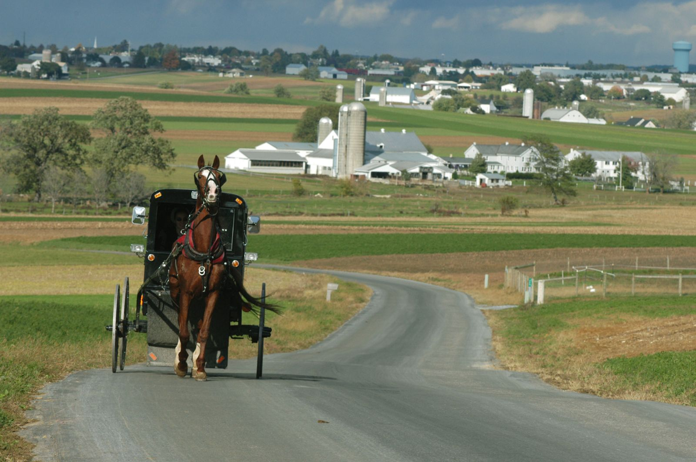

Farmland Locations
I have listed below towns streets to view Amish farmland where you will them working in the farm, their houses, Amish buggies and Amish sightings
Old Philadelphia Pike from Route 30 goes through Amish Farmland until it reaches Route 30
- Here are the some of the of Amish farmland towns
I have attached pictures of Amish farmland maps
